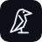

…
No painel do DotCrow, abra Extensão do Chrome e copie o código.
O corvo só mexe nas abas do grupo vermelho DotCrow. Um cursor vermelho mostra onde ele clica, e o Chrome avisa no topo enquanto ele usa a aba.

No painel do DotCrow, abra Extensão do Chrome e copie o código.
O corvo só mexe nas abas do grupo vermelho DotCrow. Um cursor vermelho mostra onde ele clica, e o Chrome avisa no topo enquanto ele usa a aba.